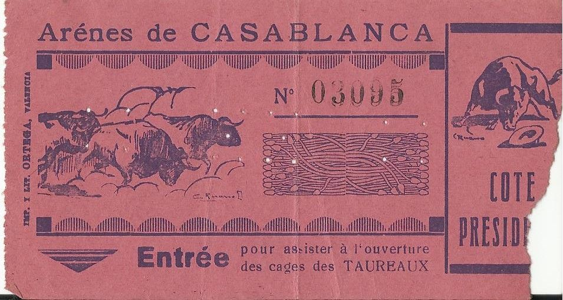

Les arènes de Casablanca ont vu le jour en 1921, sous l’impulsion de la famille Castella, des Espagnols établis au
Maroc. Construites en seulement 80 jours par l'architecte français Alexandre Cormier, elles étaient destinées à devenir
un haut lieu de la tauromachie.
لكن الدار البيضاء لم تتوقف عند عصر الساحات. حتى بعد هدمها في عام
1971،
استمرت المدينة في التطور والتكيف وتنوع عروضها الترفيهية.
ⵢⵉⵏ ⵓⵙⴳⴰⵣ ⴳⴰ ⵏⵉⴽⵎⴰⵙⵏⴰⵏⵢⴰ ⵏⵙⴳⵔⵉⴷⵉⵏ ⵡⴰⵏⴰⵏ ⴰⴽⵔⵓⵙ. ⵓⵣⴰⵏⴰⵎ ⵉⵙⵙⵓ ⵎⴰⵢⴰⵡⴰ 1971،
ⴰⴳⵔⴳⵉ ⵜⴰⵎⵓⵔⴳ ⵢⵉⵏⵙⵍⴰⵡⵉⵏ ⵢⴰⵏⵉ ⵜⴰⵏⴷⵉⴼ ⵉⵏⵡⵍⵉⴷⴰⵢⵉⵏ ⴷ ⵜⵓⵣⴳⵓⴼⵉⵏ ⵉⵎⵉⵎⵉⵡⴰⵏ ⴷ ⵓⵣⵉⴳⵉⴼ ⴰⵏⴼⵍⵉⴽⵉⵏ ⵏ ⵜⵎⵓⵣⵣⴰ
ⴷ ⵜⵙⴳⵣⵓⵏⵉⵏ
ⵉⵎⵉⵎⵉⵡⴰⵏ.

Inaugurées en grande pompe en octobre 1921 par le futur Maréchal Lyautey, les arènes ont rapidement attiré les foules
pour des corridas et autres spectacles taurins. Avec une capacité de 12 000 places, elles ont marqué le début d’une ère
festive pour Casablanca.
فقرة 2 بالعربية...
ⵉⵎⵎⵉⵡⴰⵏ 2 ⵉⵏ ⵜⴰⵎⴰⵣⵉⵖⵜ...

À partir de 1953, sous la direction de Paul Barrière et Don Vicente Marmaneu, les arènes ont connu leur apogée. Les plus
grands toreros, tels que Paco Camino et El Cordobès, ont foulé le sable des arènes, faisant vibrer les aficionados
casablancais.
فقرة 3 بالعربية...
ⵉⵎⵎⵉⵡⴰⵏ 3 ⵉⵏ ⵜⴰⵎⴰⵣⵉⵖⵜ...

Outre les corridas, les arènes sont devenues une scène prestigieuse pour des concerts de légendes comme Ray Charles et
Dalida, ainsi que pour des événements sportifs comme les courses de stock-car et les combats de boxe, élargissant ainsi
leur audience.
فقرة 4 بالعربية...
ⵉⵎⵎⵉⵡⴰⵏ 4 ⵉⵏ ⵜⴰⵎⴰⵣⵉⵖⵜ...

Malheureusement, la mort de Don Vicente Marmaneu et la pression immobilière ont conduit à la démolition des arènes en
1971. Aujourd’hui, le souvenir de ces moments glorieux demeure vivace dans la mémoire collective des Casablancais.
فقرة 5 بالعربية...
ⵉⵎⵎⵉⵡⴰⵏ 5 ⵉⵏ ⵜⴰⵎⴰⵣⵉⵖⵜ...